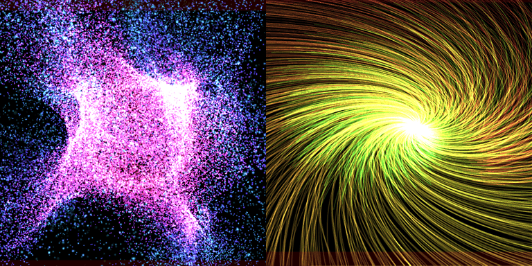

GPUパーティクル¶
概要¶
GPUパーティクルに関するパラメーターを設定します。 ここを設定したノードのパーティクルは、エミッタとなりGPUパーティクルを生成します。
通常のパーティクルがCPUで演算処理をしているのに対し、GPUパーティクルはGPUによって演算処理を行うため、万単位の大量のパーティクルを利用することができます。

GPUパーティクルはモダンなグラフィックスAPIでのみサポートされます。
| ターゲット | サポート | 備考 |
|---|---|---|
| DirectX 9 | ❌ | |
| DirectX 11 | ✅ | Shader Model 5.0 以降 |
| DirectX 12 | ✅ | |
| OpenGL | ❌ | |
| Vulkan | ✅ | |
| Metal | ✅ | |
| WebGL | ❌ |
| ターゲット | サポート | 備考 |
|---|---|---|
| Unity | ❌ | 今後サポート予定 |
| Unreal Engine | ❌ | 今後サポート予定 |
| Godot Engine | ❌ | 今後サポート予定 |
パラメーター¶
GPUパーティクルはGPU上で計算する都合上、機能は簡易的なものになります。
使用する¶
GPUパーティクルを有効にします。
基本設定¶
GPUパーティクルの生成に関する設定です。 GPUパーティクルを開始すると、生成量 * 生存時間 の分だけパーティクルバッファよりメモリが確保されます。
生成数¶
生成するパーティクルの合計数です。この数値の数だけパーティクルを生成すると停止します。
無限を有効にすると、無限にパーティクルを生成し続けます。
親パーティクルが破棄される、もしくは外部から停止要求されると生成を停止します。
生成量¶
1フレーム当たりのパーティクルを生成する量です。この数値を増やすことでパーティクルの密度を増やすことができます。
生成開始時間¶
パーティクルの放出を開始する時間です。パーティクル放出を遅延させることができます。
生存時間¶
パーティクルの生存時間です。各種パラメータの変化の速さに影響します。
生成形状¶
パーティクル放出元の形状に関するパラメータを設定します。 実際の形状は親パーティクルのトランスフォーム（位置、回転、拡縮）の影響を受けます。
生成形状¶
パーティクル放出元の形状のタイプを設定します。
点、線、円、球、モデルをサポートしています。
| 点形状 | 線形状 | 円形状 | 球形状 | モデル形状 |
|---|---|---|---|---|
点形状のパラメータ¶
点形状にパラメータはありません。
線形状のパラメータ¶
線形状の場合、開始位置と終了位置の2点を結んだ線分からパーティクルが生成されます。また線の太さを増やすと円錐のような形状になります。
円形状のパラメータ¶
円形状の場合、円の軸を中心軸とした円からパーティクルが生成されます。
円の半径は円の内側と円の外側で決定されます。
球形状のパラメータ¶
球形状の場合、球の半径より決定された球の表面からパーティクルが生成されます。
モデル形状のパラメータ¶
モデル形状の場合、使用するモデルのパスを設定すると、そのモデルのメッシュの表面からパーティクルが生成されます。別途サイズを指定することができます。
位置¶
パーティクルの位置、移動に関するパラメータを設定します。
またパーティクル位置はここで設定したパラメータを基準に力場の影響も受けます。
移動方向¶
パーティクル生成時の移動方向ベクトルです。
拡散角度¶
パーティクル生成時の移動方向に対してランダムに拡散させるための角度です。 0～180度の範囲で設定します。0度はランダム性はなく、90度は半球状に拡散し、180度は全方向に拡散します。
初期速度¶
パーティクル生成時の速さ。初速度に影響するパラメータです。 ランダム範囲を設定することができます。
速度減衰¶
パーティクル運動時の減衰力。このパラメータを増やすとパーティクルは移動中に減速します。 ランダム範囲を設定することができます。
回転¶
パーティクルの傾き、回転に関するパラメータを設定します。
描画形状のビルボード設定によって見た目が変わります。
固定ではXYZが、Z軸回転ビルボードではZのパラメータが影響します。
初期角度¶
パーティクル生成時の角度（オイラー角）。 ランダム範囲を設定することができます。
回転速度¶
パーティクルが回転する速度（オイラー角）。 ランダム範囲を設定することができます。
拡大率¶
パーティクルの大きさ、拡大と縮小に関するパラメータを設定します。 設定するモードによって挙動が変わります。
拡大率モードは設定した拡大率で固定されますイージングモードは始点から終点に向かって拡大率が変化します
単一拡大率¶
軸によらない固定の拡大率です。 ランダム範囲を設定することができます。
XYZ拡大率¶
XYZ軸それぞれにかかる固定の拡大率です。 ランダム範囲を設定することができます。
始点と終点 (単一)¶
軸によらないイージングの始点と終点の拡大率です。 ランダム範囲を設定することができます。
始点と終点 (XYZ)¶
XYZ軸それぞれにかかるイージングの始点と終点の拡大率です。 ランダム範囲を設定することができます。
力場¶
パーティクルの外部から力を与えるような効果を設定します。
| 重力 | 竜巻 | 乱流 |
|---|---|---|
重力¶
指定した方向に加速度をかけます。下とは限らず、上や右にも適用することができます。 この方向は親パーティクルの姿勢の影響を受けません。
竜巻¶
指定された中心点と回転軸を中心軸に回転させる力を与えます。
また回転力と吸引力を変更することでパーティクルが竜巻より与えられる力を調整できます。
乱流¶
シードとスケールと複雑度によって生成されたベクターフィールドによって、パーティクルにノイズ運動を行わせることができます。
また影響力を変更することで乱流からパーティクルに与えられる力を調整できます。
描画設定¶
パーティクルの描画する際の一般設定です。
ブレンド¶
描画する際のブレンド設定
深度書き込み¶
ONにすると深度書き込みを行います。
深度テスト¶
ONにすると深度テストを行います。
描画形状¶
パーティクルの描画する際の形状を設定します。
描画形状¶
次の3種類のタイプから形状を選択します。
| 描画形状 | 説明 |
|---|---|
| スプライト | シンプルな四角形を描画します。 |
| モデル | 任意のユーザーモデルを描画します。 |
| 軌跡 | パーティクルが移動している位置を繋いだ線を描画します。 |
配置設定¶
スプライトをパーティクルに対してどのように配置するか指定します。
| 配置方法 | 説明 |
|---|---|
| Z軸回転ビルボード | スプライトは視点側を向きつつ、Z軸に沿って回転します。 |
| 移動方向ビルボード | スプライトは視点側を向きつつ、Y+方向が移動方向へ回転します。 |
| Y軸固定 | スプライトはY軸に固定しつつ、視点側を向きます。 |
| 固定 | スプライトの向きはパーティクルの回転に従います。 |
モデル¶
描画するユーザーモデルを指定します。
軌跡の長さ¶
軌跡を構成する長さを指定します。 このパラメータを増やすと、軌跡の長さが伸び、軌跡バッファから確保するメモリサイズが増えます。
形状サイズ¶
パーティクルの描画形状のサイズを指定します。 これは拡大率のパラメータと掛け算されます。 形状が軌跡の場合は太さに影響します。
描画色¶
パーティクルの色に関するパラメータを設定します。
色継承¶
色継承を設定すると親パーティクルの色の影響を受けることができます。
全体色¶
パーティクルの色を設定します。
| タイプ | 説明 |
|---|---|
| 固定 | 変化しない固定色を設定します。 |
| ランダム | パーティクル生成時にランダムに決定される2色を設定します。 |
| イージング | 始点と終点の色を設定します。パーティクルの生存時間をかけて色が変化します。 |
| Fカーブ | RGBAの変化を描いたFカーブを設定します。 |
| グラディエント | 色の変化を描いたグラディエントを設定します。 |
エミッシブ倍率¶
パーティクルの輝度の倍率。このパラメータは全体色のRGBに掛け算されます。
フェードイン¶
パーティクルが表示されるときに、フェードインしつつ表示されるようにします。
フェードアウト¶
パーティクルが消滅するときに、フェードアウトしつつ消滅するようにします。
描画マテリアル¶
パーティクルの描画用のマテリアルの設定します。
マテリアルタイプ¶
| タイプ | 説明 |
|---|---|
| Unlit | パーティクルの色がそのまま画面に出るマテリアル |
| Lighting | 光源の影響を受けて陰をつけるマテリアル |
色テクスチャ¶
パーティクルの描画に使用する色のテクスチャです。
法線テクスチャ¶
マテリアルタイプがLightingのときに設定することができます。
パーティクルの描画に使用する法線のテクスチャです。